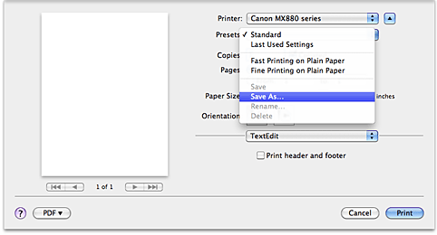
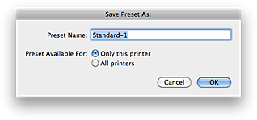

The procedure for registering a printing profile is as follows:
Registering a Printing Profile
-
In the Print dialog, set the necessary items
-
Select Save As... from the Presets
 -
Save the settings
In the displayed dialog box, enter a name in Preset Name (Save Preset As), and if necessary, set Preset Available For. Then click OK.
 Important
Important
-
With Mac OS X v.10.5.x or Mac OS X v.10.4.11, you cannot use Preset Available For.
-
Using Registered Printing Profile
-
On Presets in the Print dialog, select the name of printing profile you want to use
Printing profile in the Print dialog will be updated to the called profile.
Deleting Unnecessary Printing Profile
-
On Presets in the Print dialog, select the name of printing profile you want to delete
-
On Presets, select Delete
Selected printing profile will be deleted from Presets.
 Note
Note
-
Standard cannot be deleted.
-
With Mac OS X v.10.6.x, Fine Printing on Plain Paper and Fast Printing on Plain Paper cannot be deleted.
-